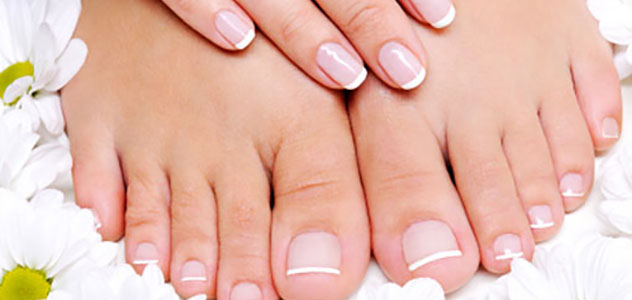

MANIKYR
Hendene er ofte noe av det første vi legger merke til når vi møter noen, og velpleide hender og negler gjør virkelig noe med selvfølelsen vår.
Allikevel kan det av og til være vanskelig å finne tid til å ta riktig vare på dem finnes i en ellers travel hverdag. Hendene våre brukes hele tiden og er særlig utsatt for å bli tørre og såre,det er defor viktig å tilføre daglig fuktighet slik at de holder seg myke og motstandsdyktige. Neglene våre trenger også næring for å vokse seg sterke og vakre.

PEDIKYR
Pedikyr handler om å forbedre føttenes og tåneglenes framtoning gjennom ulike typer fotbehandling. Pedikyr er med andre ord tilsvarende manikyr, bare at det er føttene – og ikke hendene – som er i fokus.
Pedikyr inngår både fotpleie og stell av neglebånd og negler. Det er fullt mulig å velge mellom en enkel fotmassaje og lekre tånegler. Du kan også ta begge deler om det er ønskelig. Dine føtter og tær fortjener også å bli tatt godt vare på!